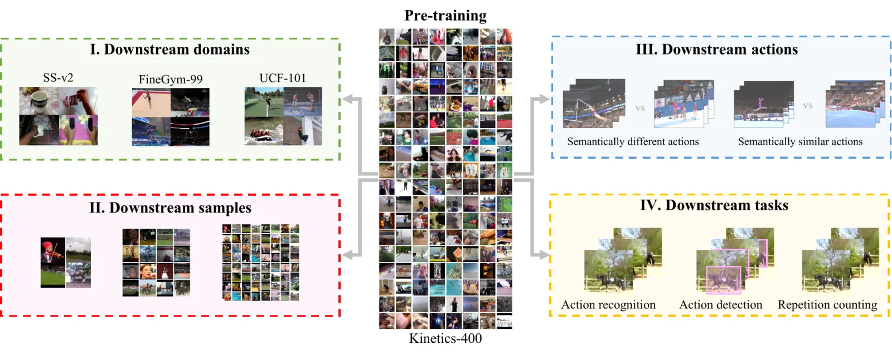

Video self-supervised learning has a measuring problem. For years, almost every paper has pre-trained on Kinetics-400 and then finetuned on something that looks a lot like Kinetics-400. Models that win there are declared the state of the art. But does winning there tell you anything about the video you actually care about?
Four years ago, we asked this of ten CNN-based methods and the answer was not really. The field has since moved to transformers, to masked autoencoding, and to video-text pre-training. So we asked again, of 22 models this time.
The leaderboard you know is not the one you get
Below, every line is one model. The left-most column is the standard yardstick, finetuning accuracy on Kinetics-400, and each next column re-ranks the same models on a different downstream dataset. If Kinetics-400 predicted transfer, the lines would run flat. They don’t.
Rank of each model, per downstream dataset
Rank 1 is best. Switch families on and off to re-rank within a family. The ranks are among the models shown.
The reshuffling is not noise at the margins. Switch to the linear probe, where the backbone is frozen, and the order is shuffled again. Then hide everything but the CNNs: among them, the Kinetics-400 rank says almost nothing about the rank on EPIC-Kitchens (Spearman ρ = +0.10).
Who we tested
Ten CNNs, seven video-only transformers and five video-text transformers. All models are public checkpoints evaluated under one downstream protocol. CNNs share an R(2+1)D-18 backbone and all CNNs and video-only transformers (ViT-B) were pre-trained on Kinetics-400, so what differs within these groups is the objective. The video-text models differ in pre-training data too, as there is no standard video-text corpus.
Read this as a benchmark of off-the-shelf models, not a controlled study of architecture or objective. Models differ in more than one way, and we are explicit about that in the limitations below.
Sensitivity, one factor at a time
We keep the pre-training fixed and move the downstream setting along four axes, as in the ECCV paper. Each of the next four sections has one chart.
How far is the downstream data from Kinetics?
We finetune or linearly probe on six datasets that range from the familiar (UCF-101) to egocentric kitchens (EPIC-Kitchens-100), gymnastics (FineGym) and object-centric motion (Something-Something v2).

Play with the plot below. Pick any two evaluations. With Kinetics-400 on one axis and a distant domain on the other, the points scatter; with two similar datasets they line up.
Compare any two downstream evaluations
Each dot is a model; colour is its family. Tap a dot to pin it.
What we see. Self-supervised video transformers are clearly more robust to domain shift than CNNs, and they beat supervised pre-training on the most distant domains (Gym-99, SS-v2). But the video-text models, despite pre-training on 10–25M pairs against Kinetics’ 240K videos, lag the video-only models on Gym-99, SS-v2 and EK-100. Good Kinetics-400 accuracy does not tell you which video-text model will transfer. One plausible reason is that aligning video with text can be solved by high-level spatial semantics, without much temporal learning.
What if you only have a thousand labelled clips?
We finetune with 1,000 samples instead of the full training set. The slope chart shows each model’s accuracy at 1k samples (left) and with everything (right).
Low-data versus full-data finetuning
Crossing lines are rank changes. Note how the fan of results on the left collapses on the right.
What we see. With enough data the gap between methods shrinks, so full-data numbers hide differences that matter when labels are scarce. In the low-data regime, ranks change a lot and the best CNN methods often beat transformers. Supervised CNN pre-training is the model to beat at 1k samples. Video-text transformers are steadier across sample sizes, with UMT best in most settings, but they are on par with or worse than the CNN and video-only models in several low-data cases.
Can it tell a layout from a layout-with-a-twist?
Within FineGym, we go from coarse (99 classes across events) to fine-grained subsets in which classes look nearly identical, such as giant circle forwards versus backwards.
Six action granularities, thread one model through all of them
Each row has its own axis from worst to best model. Vault is the odd one out: intense motion that most video models handle badly.
What we see. Rankings change a lot between subsets. VideoMAE is the worst video-only model on Gym-99 but third best on FX-S1. The best CNNs, Tubelet-Contrast and CtP in particular, outperform the best video-only transformers on almost every granularity (UB-S1 is a dead heat). Methods built to be invariant to time reversal suffer where direction matters (GDT on UB-S1). Surprisingly, CLIP and MoCo are among the best on Vault, which suggests image-style features cope with intense motion better than current video encoders.
Beyond classification
Spatio-temporal action detection, repetition counting, arrow-of-time, temporal action localization (new in this paper, on ActivityNet), and multi-label recognition. Some tasks stay in the Kinetics-adjacent domain; the last three move out of it.
Seven task settings
Repetition counting is an error, so its axis is flipped: right is always better. Scores of different families on the same task come from different downstream heads, so read cross-family gaps as indicative.
What we see. Self-supervision helps well beyond action recognition, but how well a model does at recognition says little about repetition counting or localization. Everyone struggles when domain and task change. Video-only transformers are the most consistent across tasks, and notably better than CNNs everywhere but repetition counting. Video-text models are generally worse than the top video-only ones, with the clear exception of multi-label recognition, where UMT is best of all.
Does Kinetics-400 predict anything?
For each downstream setting we computed the Spearman rank correlation between a model’s Kinetics-400 finetuning accuracy and its score there. Values near +1 mean “K400 order ≈ this order”; near 0, K400 is no help.
Rank correlation with Kinetics-400 finetuning
The ringed dot pools all 22 self-supervised and video-text models. Coloured dots are per family (only 5 video-text models, so treat them gently). Computed live from the paper’s tables; supervised baselines excluded.
Pooled over all models, Kinetics-400 predicts UCF-101, SS-v2 and EK-100 well (ρ ≥ 0.78), but largely because transformers beat CNNs on all of them. On FineGym-99, and on every action subset, it is anti-correlated (ρ ≈ −0.5), again because CNNs win there. Within CNNs the correlation fades as the domain gets further away: +0.78 on UCF-101, +0.10 on EPIC-Kitchens. Video-only transformers are the most predictable family. With five models, the video-text family bounces around, which is itself a warning against trusting one benchmark.
Who wins where
Below is the best model of each family on each column of the new benchmark. Positions are scaled from worst to best among all 22 models.
Best of each family, per SEVERE++ column
No family wins every row. Transformers lead on SS-v2 and multi-label recognition; CNNs lead on Gym-99, low-data Gym-99, FX-S1 and repetition counting.
What we take from it
- No clear winner.Different models stand out in different settings, in every family. Nothing is best across the board.
- Transformers are not the best everywhere.They are more robust than CNNs to domain and task shift, but trail CNNs on fine-grained actions and when finetuning samples are scarce.
- Video-only matches or beats video-text.With 240K Kinetics videos against 2–25M pairs, video-only transformers are on par or better. The best video-text model, UMT, also uses a video-only masked encoder.
- Supervised pre-training still matters for CNNs.It dominates in low-data, and under joint domain and task shift. For transformers it falls well behind the best self-supervised models.
- Some invariances hurt.Learning invariance to temporal reversal, as GDT does, costs accuracy on actions that differ in direction, like Something-Something or UB-S1.
- Motion in pre-training helps.Synthetic motion in CtP and Tubelet-Contrast makes them the strongest CNNs. LocoMotion, a video-text model, matches VindLU with about a tenth of the data.
- Reconstruct semantics, not pixels.Among masked autoencoders, those that predict high-level targets (HOG in MME, DINO features in SIGMA) generalise best.
SEVERE-benchmark++
Nobody wants to run 1,100 experiments. So we distilled the study into a compact benchmark: two evaluations per factor, plus Kinetics-400 as the standard reference.
- Domain. Finetune on Something-Something v2 and FineGym-99.
- Samples. Finetune on 1,000 samples of UCF-101 and FineGym-99.
- Actions. FineGym subsets FX-S1 and UB-S1.
- Tasks. Repetition counting (UCF-RC) and multi-label recognition (Charades).
Stronger shading means a better rank. Click a column to sort. “Mean rank” is a convenience of this page, not a score proposed in the paper.
Ranks are among all 24 rows, supervised baselines included. MGM has no 1k-sample numbers in the paper’s benchmark table, so its mean rank is left blank.
Code, checkpoints and evaluation recipes live in the SEVERE-BENCHMARK-plus-plus repository (being updated).
Limitations
Pre-training is fixed to Kinetics-400 for CNNs and video-only transformers, and the video-text models use whatever data their authors chose. We use R(2+1)D-18 and ViT-B only; larger backbones remain open. Tasks centre on human actions and encoder-only evaluation, so multimodal reasoning such as video question answering is out of scope. We evaluate off-the-shelf models, so differences in augmentation, schedule and data are folded into the results.
BibTeX
@article{thoker2026severepp,
title = {{SEVERE++}: Evaluating Benchmark Sensitivity in Generalization of Video Representation Learning},
author = {Thoker, Fida Mohammad and Jiang, Letian and Zhao, Chen and Bagad, Piyush and Doughty, Hazel and Ghanem, Bernard and Snoek, Cees G. M.},
journal = {International Journal of Computer Vision},
year = {2026}
}
@inproceedings{thoker2022severe,
title = {How Severe is Benchmark-Sensitivity in Video Self-Supervised Learning?},
author = {Thoker, Fida Mohammad and Doughty, Hazel and Bagad, Piyush and Snoek, Cees G. M.},
booktitle = {European Conference on Computer Vision (ECCV)},
year = {2022}
}